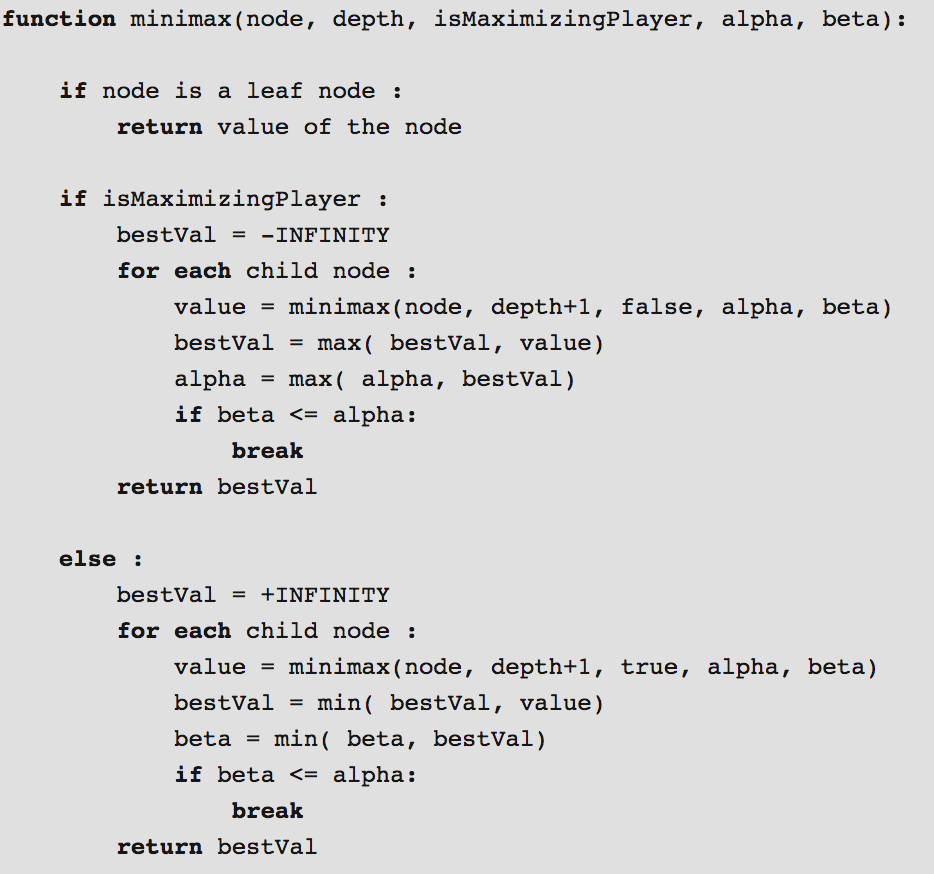

Problem Definition
Give a concise description of current problem. What needs to be solved? Why is the result useful? Do you make any assumptions? What are the anticipated difficulties? In this programming assignment, we are supposed implement an AI algorithm for Qubic tic-tac-toe game. We make our own heuristic function to evaluate the current board and use minimax and alpha-beta purning algorithms to get the best move.
Method and Implementation
Give a concise description of the implemented method. For example, you might
describe the motivation of your idea, the algorithmic steps of your methods, or
the mathematical formulation of your method.
MiniMax pseudo-code:

image credit: https://www.geeksforgeeks.org/minimax-algorithm-in-game-theory-set-4-alpha-beta-pruning/
Structure of myAIalgorithm:

image credit to: https://www.geeksforgeeks.org/minimax-algorithm-in-game-theory-set-3-tic-tac-toe-ai-finding-optimal-move/
Briefly outline the functions you created in your code to carry out the algorithmic steps you described earlier.
- ultimateheuristic(board,depth,player,alpha,beta);
- new_minimax(): This function takes 4 inputs: board,depth, player,alpha and beta. Board and player are used to calculate the heuristic value at the leaf node. Depth is for look ahead. alpha and beta are for alpha-beta purning. The function will generate all the possible moves by the player, evaluate all the possible boards and return the best score of the board. By using alpha-beta purning, we can make ou program faster by cutting branches of the tree.
- possibleWinLines(board,player): This function take two inputs: board and player. It will return all the possible winning combinations based on the current board for a certain player.
- almostWinInLine(board, position_list, player): This is a helper function which takes 3 inputs. This function will return whether a player has 3 pieces placed on a winning row already, and there is no enemy's move on that row.
- hasWon(board,player): This function will return whether a player has already won.
Experiments
Describe your experiments, including the number of tests that you performed, and the relevant parameter values.
Experiment 1 : Our AI vs. Our AI with same level of lookahead of 2 for 100 times:
Result: Player 1 have a slightly higher winning rate. The average moving time for player 1 is 0.345 seconds.
The output looks like this:

Experiment 2: Our AI with lookahead of 2 vs. random player for 100 times:
Result: We destroyed the random Player. We won all the games.
The output looks like this:

Define your evaluation metrics, e.g., detection rates, accuracy, running time.
Results
List your experimental results. Provide examples of input images and output images. If relevant, you may provide images showing any intermediate steps. If your work involves videos, do not submit the videos but only links to them. Our heuristic function correctly evalute the current board, and our minimax algorithm correctly give us the best move. Our AI beats the random player everytime and it also beats the human player.
Results | ||
| Trial | Source Image | Result Image |
| trial 1 |  |
 |
| trial 2 |  |
 |
| trial 3 |  |
 |
Discussion
Discuss your method and results:
- What are the strengths and weaknesses of your method?
- Do your results show that your method is generally successful or are there limitations? Describe what you expected to find in your experiments, and how that differed or was confirmed by your results.
- Potential future work. How could your method be improved? What would you try (if you had more time) to overcome the failures/limitations of your work?
Conclusions
Based on your discussion, what are your conclusions? What is your main message? In general, we made our own heuristic function to evaluate the whole board. Then we used minimax and alpha-beta purning algorithms to make the decisions and improve the performance of the system.
Credits and Bibliography
Cite any papers or other references you consulted while developing your solution. Citations to papers should include the authors, the year of publication, the title of the work, and the publication information (e.g., book name and publisher; conference proceedings and location; journal name, volume and pages; technical report and institution).
Material on the web should include the url and date of access.
Credit any joint work or discussions with your classmates.